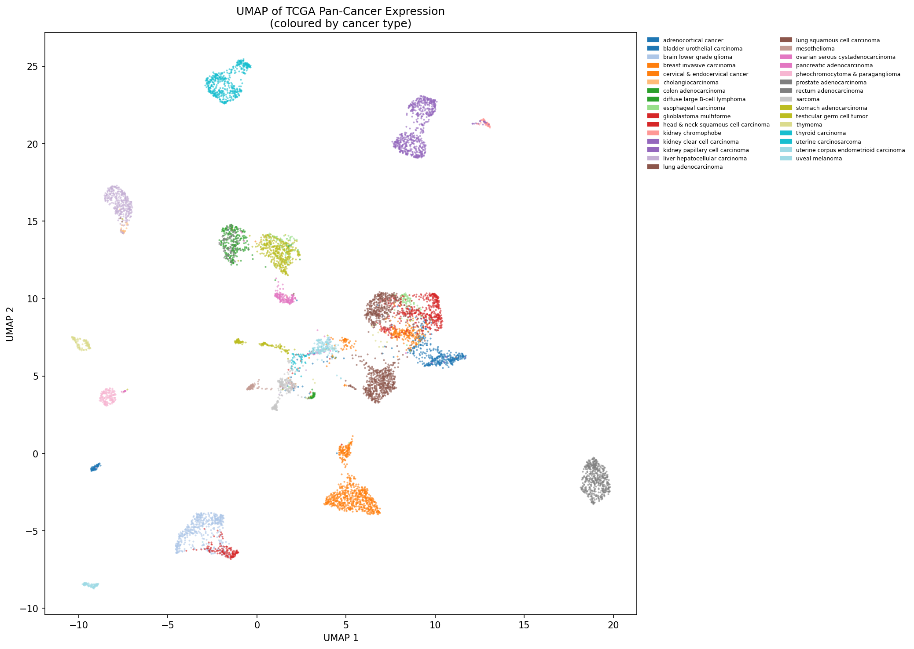
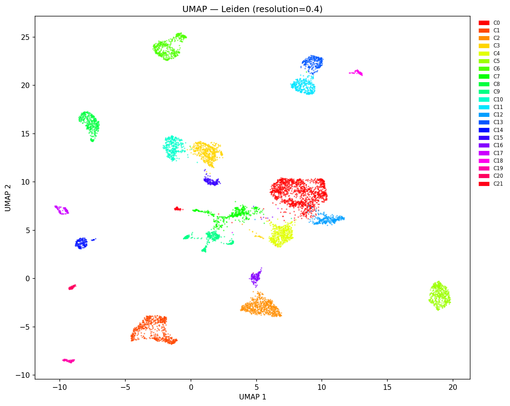
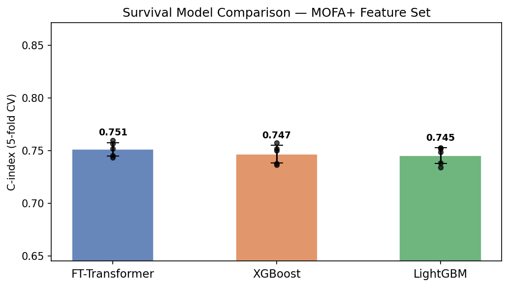
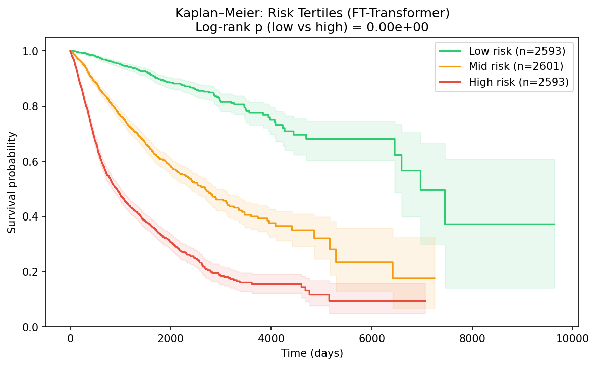
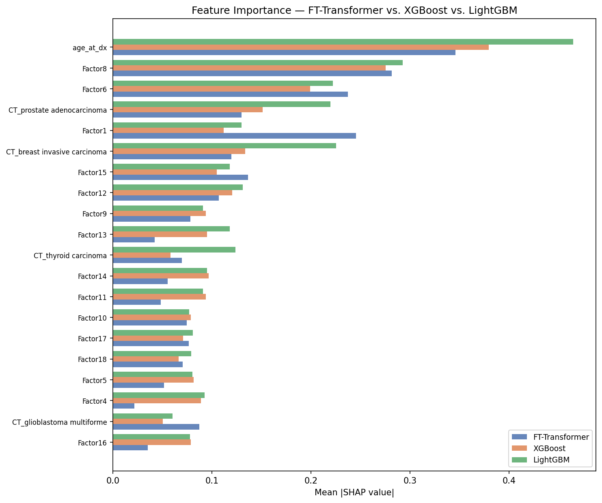
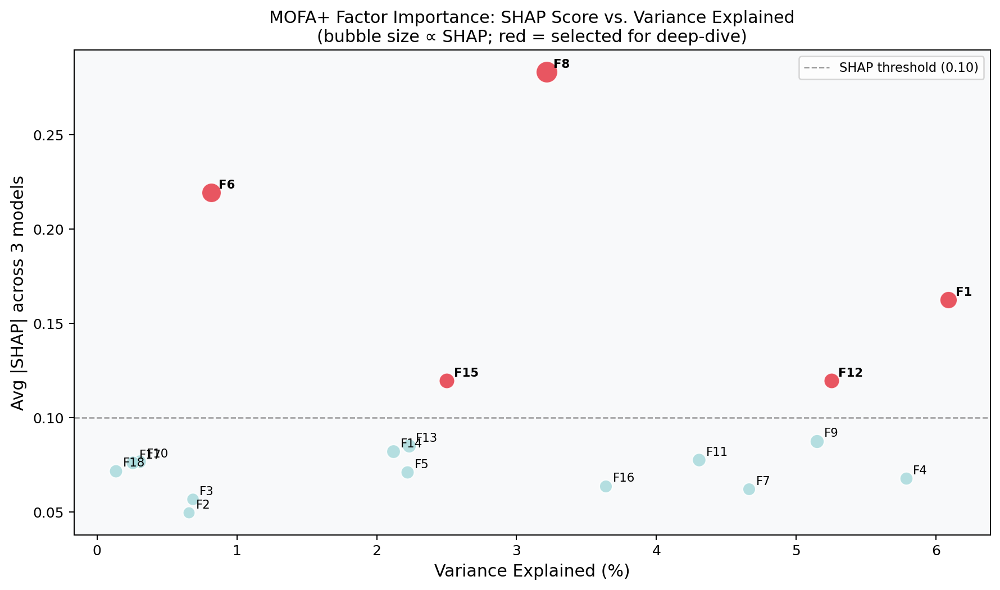
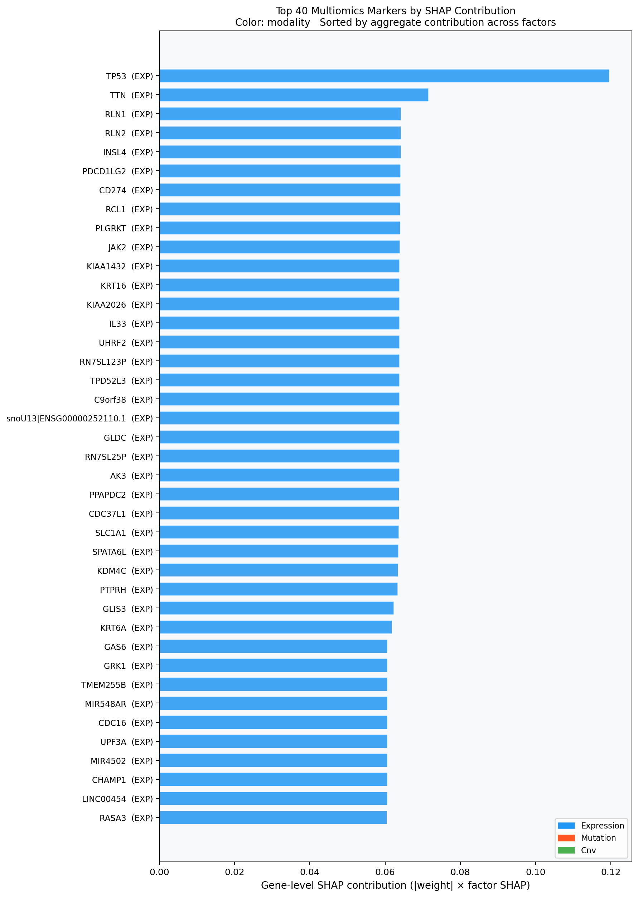
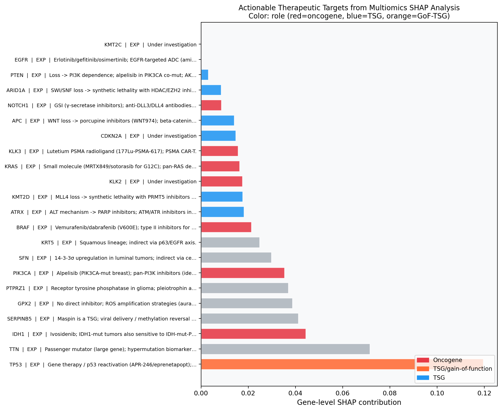

Executive Overview
This project integrates TCGA pan-cancer molecular data from UCSC Xena into a common primary-tumor cohort, then asks three linked questions: what molecular structure is visible across cancers, which learned factors predict survival, and which gene-level markers or therapeutic hypotheses emerge from those factors.
Data Assets and Cohort Construction
Raw data were downloaded from open UCSC Xena hubs using download_tcga.py, then converted to CSV by convert_to_csv.py. The analysis ultimately uses expression, MC3 mutations, GISTIC2 copy number, phenotype, and TCGA-CDR survival annotations. Methylation, miRNA, and RPPA loaders/converters are present but are not part of the final aligned modeling matrix documented here.
Current Cohort Composition
| Cancer type | Samples | Cohort % |
|---|---|---|
| breast invasive carcinoma | 779 | 9.9% |
| lung adenocarcinoma | 503 | 6.4% |
| brain lower grade glioma | 501 | 6.3% |
| head & neck squamous cell carcinoma | 491 | 6.2% |
| prostate adenocarcinoma | 484 | 6.1% |
| thyroid carcinoma | 480 | 6.1% |
| lung squamous cell carcinoma | 471 | 6.0% |
| stomach adenocarcinoma | 407 | 5.2% |
| bladder urothelial carcinoma | 401 | 5.1% |
| kidney clear cell carcinoma | 361 | 4.6% |
| liver hepatocellular carcinoma | 349 | 4.4% |
| kidney papillary cell carcinoma | 278 | 3.5% |
| cervical & endocervical cancer | 276 | 3.5% |
| colon adenocarcinoma | 269 | 3.4% |
| sarcoma | 231 | 2.9% |
Matrix Dimensions
| Modality | Samples | Features | Processing |
|---|---|---|---|
| Expression | 7902 | 5000 | TOIL RSEM gene TPM, floor replacement, top-variance selection, HGNC symbol mapping where available |
| Mutations | 7902 | 1490 | MC3 nonsynonymous effects, 15-character TCGA barcode normalization, binary gene matrix, minimum frequency filter |
| Copy number | 7902 | 24776 | GISTIC2 thresholded gene-level values from -2 to +2 |
| Clinical | 7902 | 5 | Cancer type, OS time, OS event, age at diagnosis, TCGA-CDR abbreviation |
End-to-End Methodology
- Download open-access TCGA data: expression from TOIL Xena, mutations and clinical/survival resources from PanCanAtlas Xena, and copy number from the TCGA Xena hub.
- Convert source matrices: TSV/GZ inputs are converted to CSV; large methylation conversion supports chunked processing but was not used in the final integrated feature matrix.
- Preprocess and align samples: expression is transposed to samples by genes and filtered to top variance; mutations are converted to binary nonsynonymous gene indicators; CNV is transposed into samples by genes; clinical phenotype is joined to TCGA-CDR survival.
- Restrict to primary tumors: TCGA sample barcodes are standardized to 15 characters and filtered to primary tumor samples ending in
-01. - Explore global structure: StandardScaler + PCA(50) on expression, followed by UMAP for visualization.
- Discover molecular subtypes: MiniBatch K-means scans k=2..25 using silhouette/inertia and Leiden clustering builds a 15-nearest-neighbor graph in PCA space.
- Build baseline survival models: Cox Ridge and DeepSurv use expression PCA(50), top-100 mutation genes, and CNV PCA(30), with ElasticNet preselection and 5-fold event-stratified cross-validation.
- Train MOFA-style latent factors: expression, mutation, and CNV views are reduced to high-information subsets and factorized into latent sample factors, with weights and variance exported.
- Compare final survival learners: FT-Transformer, XGBoost survival Cox, and LightGBM custom Cox are trained on MOFA factors plus cancer-type one-hot variables and age.
- Interpret and decode: SHAP values rank survival-relevant factors/features; MOFA weights project factor importance back onto genes; curated pathway/therapeutic annotations produce target tables.
Unsupervised Structure
The expression-derived PCA/UMAP analysis separates tumors primarily by lineage and cancer type. Clustering reinforces that broad tumor identity dominates pan-cancer expression structure, with Leiden providing a more granular set of communities than K-means.
K-means Distribution
| K-means cluster | Samples | Cohort % |
|---|---|---|
| K0 | 809 | 10.2% |
| K1 | 7093 | 89.8% |
Leiden Distribution
| Leiden cluster | Samples | Cohort % |
|---|---|---|
| L0 | 1338 | 16.9% |
| L1 | 642 | 8.1% |
| L2 | 635 | 8.0% |
| L3 | 519 | 6.6% |
| L4 | 508 | 6.4% |
| L5 | 484 | 6.1% |
| L6 | 478 | 6.0% |
| L7 | 439 | 5.6% |
| L8 | 379 | 4.8% |
| L9 | 368 | 4.7% |
| L10 | 353 | 4.5% |
| L11 | 341 | 4.3% |
| L12 | 276 | 3.5% |
| L13 | 274 | 3.5% |
| L14 | 169 | 2.1% |
| L15 | 158 | 2.0% |
| L16 | 139 | 1.8% |
| L17 | 108 | 1.4% |
| L18 | 79 | 1.0% |
| L19 | 78 | 1.0% |
| L20 | 73 | 0.9% |
| L21 | 64 | 0.8% |








Survival Modeling Results
The final multi-model comparison used MOFA factors, cancer-type indicator variables, and age at diagnosis. Models were evaluated with 5-fold StratifiedKFold by OS event using Harrell C-index. The raw PCA XGBoost baseline was included to test whether factor-based features improve stability.
| Model | Mean C-index | SD |
|---|---|---|
| FT-Transformer | 0.7512 | 0.0063 |
| XGBoost | 0.7465 | 0.0082 |
| LightGBM | 0.7451 | 0.0075 |
| XGBoost raw PCA baseline | 0.7237 | 0.0532 |
Earlier Cox and DeepSurv Feature Interpretation
The Cox/DeepSurv branch provides interpretable baseline survival modeling from raw PCA/mutation/CNV features. Top shared signals include expression PCs, CNV_PC15, and recurrent mutation indicators such as USH2A, CSMD1, and LAMA1.
| Raw/PCA feature | Cox |SHAP| | DeepSurv |SHAP| | Average |
|---|---|---|---|
| EXPR_PC14 | 0.163 | 0.0968 | 0.1299 |
| EXPR_PC9 | 0.1172 | 0.1332 | 0.1252 |
| EXPR_PC4 | 0.1314 | 0.0688 | 0.1001 |
| CNV_PC15 | 0.1038 | 0.0883 | 0.0961 |
| EXPR_PC50 | 0.0846 | 0.0709 | 0.0778 |
| EXPR_PC42 | 0.0946 | 0.056 | 0.0753 |
| MUT_USH2A | 0.062 | 0.0675 | 0.0648 |
| EXPR_PC37 | 0.068 | 0.0584 | 0.0632 |
| EXPR_PC46 | 0.0735 | 0.0497 | 0.0616 |
| MUT_CSMD1 | 0.0626 | 0.0565 | 0.0596 |
| MUT_LAMA1 | 0.0596 | 0.0573 | 0.0584 |
| EXPR_PC33 | 0.0564 | 0.0589 | 0.0577 |
MOFA Factors and Cross-Model SHAP
MOFA factors form the central bridge between multi-omics structure and survival prediction. Factor-level SHAP shows that age remains the strongest single predictor, but several MOFA factors contribute strongly and consistently across FT-Transformer, XGBoost, and LightGBM.
Top Predictive Features by Cross-Model SHAP
| Feature | Mean |SHAP| across models | Max |SHAP| |
|---|---|---|
| age_at_dx | 0.3966 | 0.4644 |
| MOFA_Factor8 | 0.2831 | 0.2925 |
| MOFA_Factor6 | 0.2194 | 0.2371 |
| CT_prostate adenocarcinoma | 0.1670 | 0.2197 |
| MOFA_Factor1 | 0.1624 | 0.2455 |
| CT_breast invasive carcinoma | 0.1595 | 0.2252 |
| MOFA_Factor15 | 0.1197 | 0.1364 |
| MOFA_Factor12 | 0.1196 | 0.1313 |
| MOFA_Factor9 | 0.0877 | 0.0937 |
| MOFA_Factor13 | 0.0852 | 0.1181 |
| CT_thyroid carcinoma | 0.0839 | 0.1237 |
| MOFA_Factor14 | 0.0823 | 0.0966 |
| MOFA_Factor11 | 0.0778 | 0.0938 |
| MOFA_Factor10 | 0.0768 | 0.0788 |
| MOFA_Factor17 | 0.0762 | 0.0808 |
Top MOFA Factors by Variance Explained
| Factor | Total R2 across views | R2 per view |
|---|---|---|
| Factor1 | 0.1827 | 0.0609 |
| Factor4 | 0.1735 | 0.0578 |
| Factor12 | 0.1575 | 0.0525 |
| Factor9 | 0.1545 | 0.0515 |
| Factor7 | 0.1398 | 0.0466 |
| Factor11 | 0.1291 | 0.0430 |
| Factor16 | 0.1091 | 0.0364 |
| Factor8 | 0.0964 | 0.0321 |
| Factor15 | 0.0750 | 0.0250 |
| Factor13 | 0.0669 | 0.0223 |
| Factor5 | 0.0666 | 0.0222 |
| Factor14 | 0.0636 | 0.0212 |
| Factor6 | 0.0245 | 0.0082 |
| Factor3 | 0.0205 | 0.0068 |
| Factor2 | 0.0197 | 0.0066 |
Marker and Therapeutic Target Synthesis
The marker-analysis layer multiplies factor-level survival importance by gene-level MOFA weights, then aggregates across factors and modalities. This produces a ranked list of genes whose expression, mutation, or CNV loadings plausibly connect latent multi-omics programs to survival risk.
Top Therapeutic / Marker Candidates
| Gene | Modality | Contribution | Factors | Role | Pathway | Actionable |
|---|---|---|---|---|---|---|
| TP53 | expression | 0.1196 | 5 | TSG/gain-of-function | DNA damage response | Yes |
| TTN | expression | 0.0716 | 4 | Unknown | Unknown | Partial |
| RLN1 | expression | 0.0643 | 1 | Unknown | Unknown | Partial |
| RLN2 | expression | 0.0643 | 1 | Unknown | Unknown | Partial |
| INSL4 | expression | 0.0642 | 1 | Unknown | Unknown | Partial |
| PDCD1LG2 | expression | 0.0641 | 1 | Unknown | Unknown | Partial |
| CD274 | expression | 0.0641 | 1 | Unknown | Unknown | Partial |
| RCL1 | expression | 0.064 | 1 | Unknown | Unknown | Partial |
| PLGRKT | expression | 0.064 | 1 | Unknown | Unknown | Partial |
| JAK2 | expression | 0.0639 | 1 | Unknown | Unknown | Partial |
| KIAA1432 | expression | 0.0639 | 1 | Unknown | Unknown | Partial |
| KRT16 | expression | 0.0639 | 2 | Unknown | Epithelial differentiation | Partial |
| KIAA2026 | expression | 0.0639 | 1 | Unknown | Unknown | Partial |
| IL33 | expression | 0.0638 | 1 | Unknown | Unknown | Partial |
| snoU13|ENSG00000252110.1 | expression | 0.0638 | 1 | Unknown | Unknown | Partial |
| RN7SL25P | expression | 0.0638 | 1 | Unknown | Unknown | Partial |
| TPD52L3 | expression | 0.0638 | 1 | Unknown | Unknown | Partial |
| RN7SL123P | expression | 0.0638 | 1 | Unknown | Unknown | Partial |
| C9orf38 | expression | 0.0638 | 1 | Unknown | Unknown | Partial |
| GLDC | expression | 0.0638 | 1 | Unknown | Unknown | Partial |
Example Factor-to-Gene Contributions
| Gene | Factor | Modality | Direction | |Weight| | Gene contribution |
|---|---|---|---|---|---|
| PRSS3 | Factor8 | expression | up | 0.1913 | 0.0542 |
| FERMT1 | Factor8 | expression | up | 0.1745 | 0.0494 |
| VSNL1 | Factor8 | expression | up | 0.1716 | 0.0486 |
| PTPRH | Factor8 | expression | up | 0.1642 | 0.0465 |
| ATP10B | Factor8 | expression | up | 0.1642 | 0.0465 |
| PI3 | Factor8 | expression | up | 0.1591 | 0.045 |
| KLK6 | Factor8 | expression | up | 0.1558 | 0.0441 |
| HPN | Factor8 | expression | down | 0.1546 | 0.0438 |
| IL1A | Factor8 | expression | up | 0.1492 | 0.0422 |
| SPRR1B | Factor8 | expression | up | 0.1456 | 0.0412 |
| SERPINB5 | Factor8 | expression | up | 0.1455 | 0.0412 |
| CYP4F3 | Factor8 | expression | up | 0.1443 | 0.0408 |
| FGFBP1 | Factor8 | expression | up | 0.1432 | 0.0405 |
| SPRR1A | Factor8 | expression | up | 0.1375 | 0.0389 |
| AKR1B10 | Factor8 | expression | up | 0.1373 | 0.0389 |
| GPX2 | Factor8 | expression | up | 0.1368 | 0.0387 |
| KRT6B | Factor8 | expression | up | 0.1327 | 0.0376 |
| PCSK9 | Factor8 | expression | up | 0.132 | 0.0374 |
Major Findings
1. Pan-cancer lineage dominates unsupervised structure
UMAP and Leiden/K-means clustering show that expression-derived molecular structure is largely organized by cancer type and tissue lineage. Leiden finds 22 communities, capturing more local tumor substructure than the coarse 2-cluster K-means solution.
2. Factor-based survival modeling is stronger and more stable than raw PCA features
FT-Transformer, XGBoost, and LightGBM all reached mean C-indices around 0.745-0.751 with MOFA plus age and cancer-type inputs, while the raw PCA XGBoost baseline was lower and less stable.
3. Age and tumor context remain essential covariates
Age at diagnosis is the top cross-model SHAP feature. Cancer-type indicators for prostate, breast, and thyroid also rank highly, emphasizing that pan-cancer survival modeling must account for baseline prognosis differences between tumor types.
4. Several latent MOFA factors carry independent prognostic signal
MOFA_Factor8, Factor6, Factor1, Factor15, and Factor12 appear among the strongest factor-level SHAP signals. These factors compress multi-omics patterns into survival-relevant axes that can be decoded through their gene weights.
5. Marker synthesis nominates biologically plausible but mixed-confidence targets
TP53 is the top aggregated expression-level marker, with additional candidates including immune/checkpoint-linked genes such as CD274 and PDCD1LG2, JAK2, epithelial differentiation genes such as KRT16, and a set of under-investigated expression markers. The project appropriately labels many as partial or unknown.
6. The current artifact set supports manuscript-style reporting
The repository contains final figures, tables, a manuscript DOCX, supplementary DOCX, and HTML reports. The new document consolidates methodology and current CSV-derived results into a single browsable reference.
Key Project Files
| File or directory | Purpose |
|---|---|
download_tcga.py | Downloads open-access TCGA Xena resources. |
convert_to_csv.py | Converts downloaded TSV/GZ assets to CSV; supports chunked methylation conversion. |
src/preprocess.py | Builds the aligned multiomics cohort and writes aligned modality matrices. |
src/unsupervised/dim_reduction.py | Runs PCA and UMAP visualization. |
src/unsupervised/clustering.py | Runs K-means and Leiden clustering plus cluster characterization plots. |
src/supervised/cox_models.py | Cox Ridge survival modeling branch. |
src/supervised/deepsurv.py | Neural Cox/DeepSurv survival modeling branch. |
src/supervised/model_comparison.py | FT-Transformer, XGBoost, and LightGBM survival comparison with SHAP. |
src/supervised/shap_analysis.py | Cox and DeepSurv SHAP interpretation for raw feature branch. |
src/analysis/marker_analysis.py | Factor-to-gene marker synthesis and therapeutic target annotation. |
results/figures/ | Publication-style PNG figures used by this report. |
results/*.csv | Aligned matrices, model scores, SHAP values, MOFA factors/weights, and target tables. |
Report generated from local files in C:\Users\debad\OneDrive\Documents\DC Academic Research\Cancer Research. Figure links are relative to the results directory, so keep this HTML inside results for images to render.